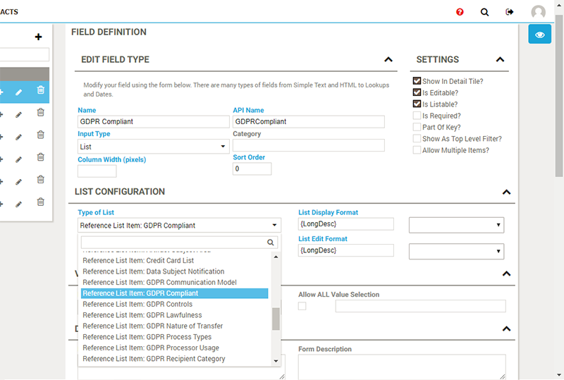

Open topic with navigation
Reference lists are used to provide values for list-based field definitions.
For a field definition of type List, choose your reference list for the property Type of List, to provide the set of possible values for the field:
